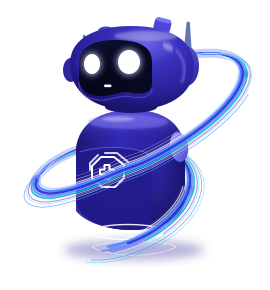

Providing The
Best Solutions
AI assistant can answer any of
your question. Just ask!
No account needed. Memory stays in this browser.
How may I help
you today ?
History
Tap the mic. How can I assist?
How voice works here
Speech in and out use your browser's own speech engine. Voice input works in Chrome, Edge and Safari. Anywhere else, Smart Chat gives you everything voice does by typing.
Ask about the weather, translate a phrase, or tell me your name.
Memory
Only what you tell Nova, kept in this browser. Nothing is inferred and nothing is sent to a server.
Speech
Voice uses your browser's speech engine. Nova understands English, so pick the accent it should listen for.
History
Forget all clears memory and history together. Deletion cannot be undone.
About
- UnderstandingRules, in your browser
- WeatherOpen-Meteo, live
- TranslationMyMemory, live
- Code on GitHub
Designed and built by Murtuza.